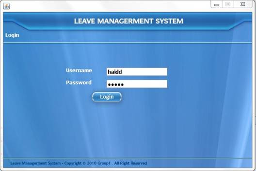
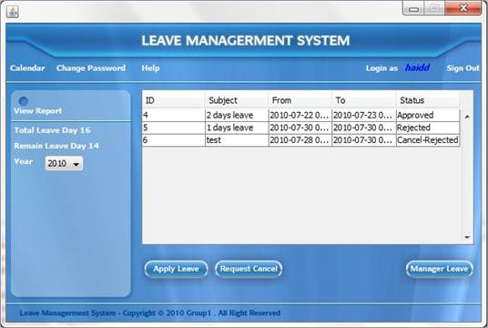
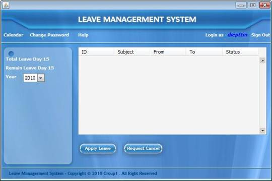
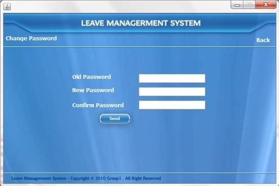
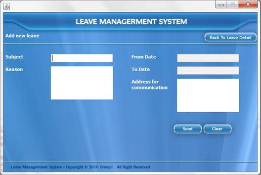
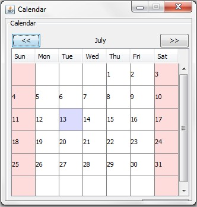
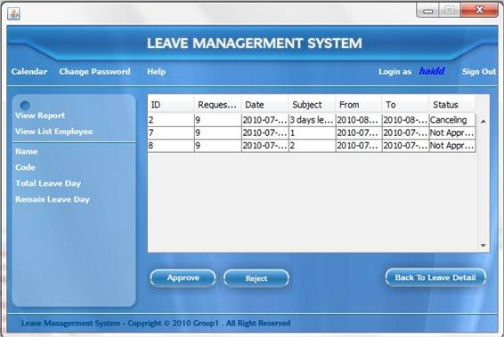
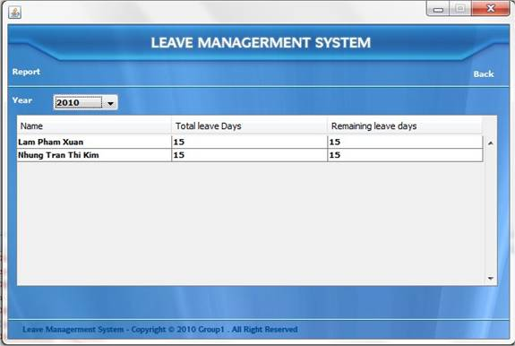
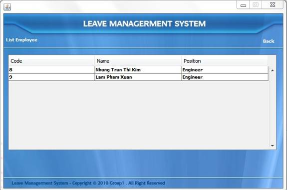
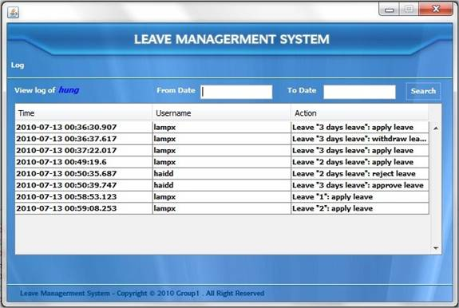

Leave Management System
User Guide
CONTENTS
7. Manage leave window structure (only for superiors)
8. Approve a leave request or a cancel request (only for superior)
9. Reject a leave request or a cancel request (only for superior)
10. View report of sub-ordinate leave activities (only for superior)
11. View list of sub-ordinate and view leave activities of each sub-ordinate (only for superior)
After start the system, login window will appear. Enter username and password to the text dialog corresponding.

If you type a wrong username or password, the warning dialog will be showed and you have to retype to access to the system.
When you access to the system successfully, you can enter the main window to manage your leave:

(Main window for superior)

(Main window for sub-ordinate)
The activities are showed up by year. All information of Total leave day and Remain leave day are showed in the left area of main window.
You can change the year on the combo box Year to view your activities in correlative year.
Click Sign out button on the top right of the main window. You will go back to login window.
Click to the Change password button on the top of the main window

- Enter the current password in the Old Password text dialog
- Enter new password in New Password text dialog
- Re-enter new password in Confirm Password text dialog
- Click Send button
If old password is correct and new password in both New Password and Confirm Password are similar, the activity of change password will be successful.
If old password is incorrect or new passwords in New Password and Confirm Password are different, system will warning by a warning window.
If you don’t want to change password, click Back button to return Main window.
Click to the Apply Leave button on the bottom of the main window:

- Enter Subject of the leave in the Subject text dialog.
- Enter Reason of the leave in the Reason text dialog
- Enter Address that the superior can contact you when you take a leave in the Address for communication text dialog.
- To get start date of the leave, click From date text dialog. The calendar will show up and you can choose the date.
- To get end date of the leave, click To date text dialog. The calendar will show up and you can choose the date
- To send the application to superior, click Send button.
- To clear all information and re-apply, click Clear button.
- To cancel the application and go back to main window, Click Back To Leave Detail button on the top right of the window.

(Calendar)
* Note: You cannot choose start date and end date before the current date.
You cannot choose end date before start date.
- Choose a leave in Approved status
- Click Request cancel button on the bottom of main window.
- The request will be sent to your superior.
From main window of superior account, click Manage Leave button on the bottom right of the window to enter Manage leave window to control sub-ordinate request:

Click to Back To Leave Detail button on the bottom of the window to go back the main window of this superior account
- Choose one leave in Not Approved status to approve a leave or in Canceling status to approve a cancel request.
- Click Approve button on the bottom left of the Manage Leave window.
- After that status of this leave will be changed.
- Choose one leave in Not Approved status to approve a leave or in Canceling status to approve a cancel request.
- Click Reject button on the bottom left of the Manage Leave window.
- After that status of this leave will be changed.
Click View Report button on the top right of the Manage Leave window:

This report allows the superior know about the status of leave: Total leave and Remain leave of his/her sub-ordinate per year
The information of sub-ordinate leave is showed by year. To change the year, choose the suitable year on the Year combo box
Click Back button on the top right to go back the Manage Leave window
Click View List Employee button on the top right of the Manage Leave window to view list of sub-ordinate:

- Click Back button on the top right to go back Manage Leave window
- Double click to one Row to view leave activities of this sub-ordinate

- To get start date for search, click to From Date text dialog, calendar will show up for you to choose a date.
- To get end date for search, click to To Date text dialog, calendar will show up for you to choose a date.
- Click Search button to search the sub-ordinate leave activities from the date in the From Date text dialog to the date in the To Date text dialog
- Press Alt+F4 to close this window